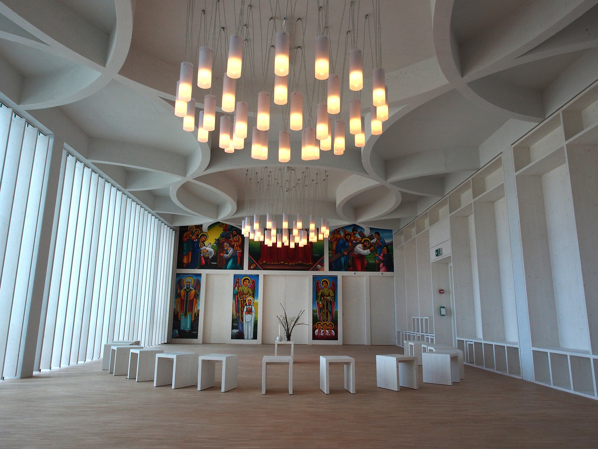

Wer in einer multikulturellen Umgebung von interreligiösem Dialog spricht, kommt nicht umhin, auch von innerreligiösen Differenzen und Klärungsprozessen zu sprechen. An kaum einem anderen Ort wird diese Notwendigkeit so deutlich manifest wie in der Ökumenischen Kirche im Haus der Religionen.
Christliche Vielfalt in einem Raum
Das Haus der Religionen in Bern versteht sich als Projekt zur Begegnung der grossen Weltreligionen. Dass an diesem Ort auch das Christentum als mit Abstand mitgliederreichste Religion in Mitteleuropa mitvertreten sein musste, erschien selbstverständlich. Zugleich war vom Beginn weg umstritten, inwiefern das Christentum als privilegierte Mehrheitsreligion neben den anderen, weitaus weniger privilegierten Minderheitsreligionen präsent sein sollte. Der Fokus auf kulturelle Vielfalt und die bewusste Auseinandersetzung mit Spannungen in multikulturellen Settings legte sich für das Haus insbesondere nahe, da mit Ausnahme des Judentums fast alle nichtchristlichen Religionsgemeinschaften erst nach dem Zweiten Weltkrieg in der Schweiz signifikant Fuss gefasst haben.
Die Kirche im Haus der Religionen. (Bild: Frieder Vollprecht)
Die Kirche im Haus der Religionen sollte deshalb das Christentum in unterschiedlichen kulturellen Prägungen repräsentieren. Da die Herrnhuter Sozietät mit ihrem langjährigen Pfarrer Hartmut Haas das Projekt «Haus der Religionen» schon lange vor der Fertigstellung des Bauprojekts begleitete, war ihre Mitwirkung an der Raumgestaltung gesetzt. Von den beiden grossen Landeskirchen, der römisch-katholischen und der evangelisch-reformierten Kirche, wirkten katholischerseits Mitarbeitende aus dem Pastoralraum und später von «Kirche im Dialog» und evangelischerseits von «Ökumene, Mission und Entwicklungszusammenarbeit» mit. Schliesslich konnte in einer äthiopisch-orthodoxen Tewahedo Kirche eine Migrationskirche gefunden werden, die an der Mitarbeit im christlichen Raum interessiert war. Der Kirchenraum wird unterdessen von acht konfessionellen Gemeinschaften gemeinsam getragen.
Architektonische Kompositionen
Der Raum im Obergeschoss des Hauses der Religionen wird durch einen Vorraum seitlich betreten. Über drei mächtige Schwingtüren werden an einer aus Holz konstruierten, weiss gestrichenen Wand Messingrohre einer Orgelkonstruktion sichtbar. Im Inneren des Hauptraumes verfängt sich der Blick zunächst an der in leuchtenden Farben geschriebenen Ikonostase, die sich über die gesamte gegenüberliegende Wand erstreckt. Weiter fällt die Fensterwand zur Linken auf, über die das Tageslicht den Raum hell flutet. Je nach Einstrahlung helfen davor angebrachte Lamellenkonstruktionen dabei, das Licht zurückzuhalten. Die rechte Längsseite ist wiederum ganz aus weiss bemaltem Holz konstruiert. Dort laden über die gesamte Länge des Raumes Sitznischen dazu ein, sich zu setzen. Die Mitte des Raumes ist (sofern keine Bestuhlung für einen Gottesdienst vorgenommen wurde) nur durch einen schlichten Halbkreis mit weissen Hockern und einen etwas höheren Tisch mit einer Kerze und verschiedenen Bibeln darauf besetzt. Bei einem Blick zurück erblickt die Besucherin über den Eingangstüren nun die Vorderseite einer modernen Orgelkonstruktion, die sich über zwei Bedienpulte jeweils in Pentatonik spielen lässt. Vorne bei der Ikonostase ist ein roter Teppich angebracht. Hinten links an der Decke ein grosser gelber Herrnhuter-Stern. Er ist das wohl bekannteste Erkennungsmerkmal der Herrnhuter-Tradition und wird im deutschsprachigen Raum auch von anderen Konfessionen verwendet.

Herrnhuter-Stern, Kirche im Haus der Religionen. (Bild: Frieder Vollprecht)
Der Raum versucht die Kombination architektonischer Elemente aus den beteiligten christlichen Traditionen: Die weissen Wände erinnern an die evangelisch-reformierten Konsistorien, ebenso wie die Sitznischen an die Chornischen Bernischer Landkirchen und katholischer Klosterkirchen. Die grosse Fensterfront, die den Raum zur Zugstrecke Bern-Fribourg und zur Nachbarschaft des Hauses hin transparent macht, erinnert an die Versammlungsräume in Herrnhut (D) und die Zinzendorfsche Vision einer Kirche, die den Kontakt zur Welt nicht verliert. Die äthiopische Ikonostase schliesslich, die einen nur für liturgisches Personal zugänglichen Altarraum abdeckt, offenbart die Farbgewalt der orthodoxen Kirchen in ihrer äthiopischen Ausprägung und setzt mit der typisch ostafrikanischen Farbwahl einen Akzent in Richtung weltweites Christentum.
Spannungsvolle Nutzungsformen
Freilich ist die gemeinsame Nutzung des Kirchenraumes durch derart
unterschiedliche christliche Gruppierungen keineswegs konfliktfrei.
Während die Herrnhuter Tradition einen betont symbolisch neutralen Ort
bevorzugt hätte, ohne ein Kreuz oder ein Bild, ist die
äthiopisch-orthodoxe Gemeinde darauf angewiesen, dass Ikonen im
Kirchenraum vorhanden sind. Römisch-katholische Kirchenräume wiederum
erfordern mindestens eine Andeutung eines Kreuzes. Auch in der
Raumbenützung bestehen divergierende Vorstellungen: Der äthiopische
Kirchenraum wird traditionsgemäss nicht mit Strassenschuhen betreten und
muss sehr sauber gehalten werden. Im Blickfeld der Ikonen darf kein
profanes Essen verzehrt oder Getränke getrunken werden. Dem gegenüber
steht die wichtige Bedeutung gemeinsamen Essens und Trinkens nach dem
Gottesdienst bei den Reformierten und den Herrnhutern. Schliesslich
steht die zentrale Bedeutung der Orgel als klassisches Begleitinstrument
für Gemeindegesang der äthiopisch-orthodoxen Beschränkung auf biblische
Instrumente wie Trommeln und Lauten für gottesdienstliche Musik
entgegen.
Die unterschiedlichen Nutzungsvorstellungen konnten und können jeweils
nur durch Kompromisse und gegenseitiges Verständnis miteinander
vereinbart werden. So verzichten etwa reformierte Gemeinden bei der
Feier in der Kirche darauf, im Kirchenraum profan zu essen oder zu
trinken. Die äthiopischen Christ*innen gestatten demgegenüber das
Betreten des Raumes mit Strassenschuhen, sofern sie nicht selbst
Gottesdienst feiern (dann wird der Raum zuvor eigens gereinigt). Für die
Ikonostase, die eine Trinitätsdarstellung mit eindeutig «männlichen»
Zügen enthält, sind Geduld und Respekt besonders von feministischen und
progressiv eingestellten Theolog*innen gefragt.

Ikonostase, Kirche im Haus der Religionen. (Bild: Frieder Vollprecht)
Ökumenische Annäherungsbewegungen
Die Kirche im Haus der Religionen geht einen ganz eigenen Weg des innerchristlichen ökumenischen Dialogs. Statt das Endprodukt einer bereits abgeschlossenen ökumenischen Klärung zu sein, versteht sie sich eher als Ausgangspunkt unterschiedlicher Annäherungsbewegungen zwischen den Konfessionen und Kulturen. Dabei fallen jeweilige Gemeinsamkeiten als wohltuende, fast wunderbare Inzidenzen in die durch den Raum offen dargestellten Differenzen ein. Seit 2018 finden in der Kirche monatlich ökumenische Friedensgebete statt, die jeweils von zwei oder drei unterschiedlichen Konfessionen gemeinsam veranstaltet werden. Manchmal treten dabei theologische oder kulturelle Differenzen zutage, oft aber tauschen sich Gemeindeglieder unterschiedlicher Herkunft auf Augenhöhe aus – und finden dabei viel Gemeinsames.
In Zukunft plant der Verein «Kirche im Haus der Religionen» noch weiteren Migrationskirchgemeinden den Raum regelmässig zur Verfügung zu stellen. Das bestehende Zusammenleben im Kirchenraum wird dadurch wohl noch spannungsvoller, aber auch noch gewinnbringender. Auch sollen gemeinsame Anlässe, Diskussionen und Bildungsangebote vertieft werden. Das Christentum soll – gerade im interreligiösen Dialog – niemals als monotone Stimme hörbar werden. Auch wenn dies viele Diskussionen vereinfachen könnte. Es soll seine Stärke und seinen Stolz in der Vielfalt und dem Respekt der jeweiligen Differenzen finden und sich in diesem Selbstverhältnis am interreligiösen Dialog beteiligen.
Dr. theol. Angela Büchel Sladkovic ist theologische Mitarbeiterin für Interreligiösen Dialog in der Kirche im Haus der Religionen.
Frieder Vollprecht ist Pfarrer der Herrnhuter Sozietäten Basel und Bern und arbeitet im Haus der Religionen in Bern mit.
Dr. theol. Christian Walti ist Pfarrer an der Friedenskirche und der Kirche im Haus der Religionen in Bern.
Weitere Artikel von {{ author.author }} finden Sie hier:
Zur Vertiefung:
- Haas, Harmut: «Haus der Religionen in Bern – ein multireligiöses Zentrum», in: Kunst und Kirche 02/2020, 17-21.
- Konferenz der leitenden Geistlichen der evangelisch-lutherischen Kirchen, der evangelisch-reformierten Kirche und der römisch-katholischen Bistümer in Niedersachsen und Bremen (Hgg.), Ökumenisch genutzte Kirchenräume. Eine Praxishilfe, Osnabrück 2009.